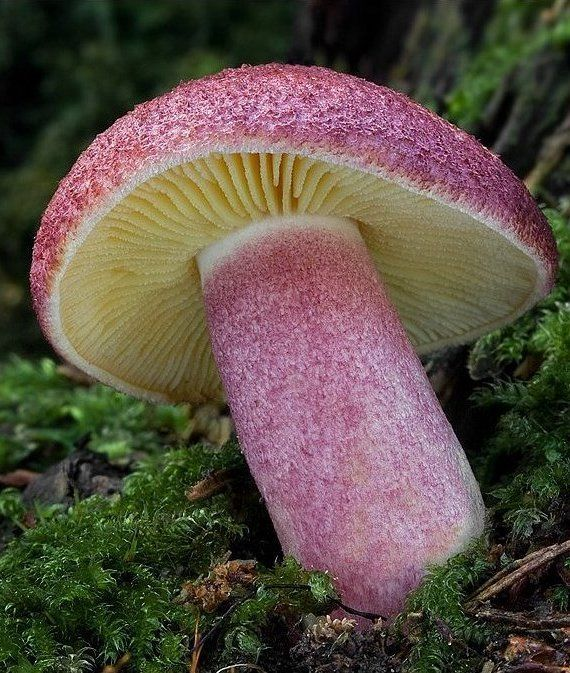

gallery exploring pink mushrooms
 webcap or pink is beautiful i love it yes noThe sudden appearance of mushrooms after a summer rain is one of the more impressive spectacles of the plant world.--John Tyler Bonner
The sudden appearance of mushrooms after a summer rain is one of the more impressive spectacles of the plant world.--John Tyler Bonner